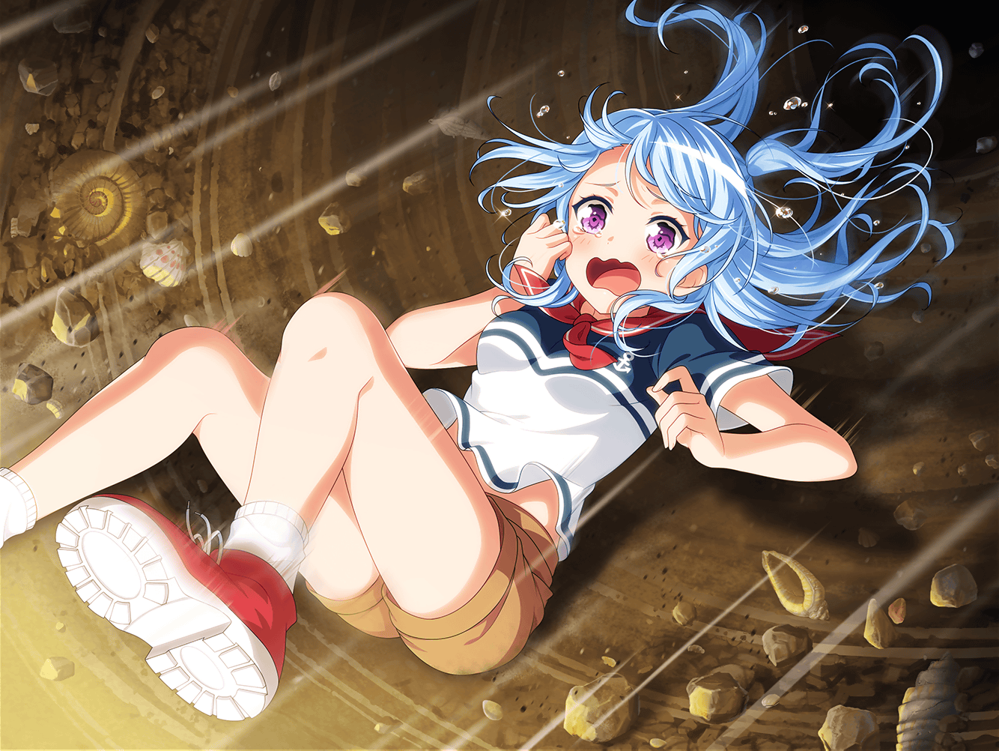

海賊の洞窟？
花音
あ、また分かれ道だよ……
美咲
うわ、またか。
あの変なトンネルを抜けてから、分かれ道ばっかり
はぐみ
しかも、はぐみ達が選んだほうの道、ずっと行き止まりだよ。
行って戻ってばっかりで疲れちゃった……
薫
はぐみ、ずっと順調でも退屈だろう。
時に失敗して、時に成功する……
波乱があってこそ、冒険は面白くなるのさ
美咲
いや、さすがに連続で失敗したらうんざりするから
こころ
でも不思議ね。
どうして行き止まりばかり選んじゃうのかしら？
薫
これもまた、儚いさだめということさ
美咲
ま、ここで立ち止まってても仕方ないし、
どっちか選んで先に行こうよ
花音
じゃあ、また多数決だね。
今度こそ行き止まりじゃないほうを選ばないと……
はぐみ
決めた！ はぐみは左の道に行きたい！
美咲
さっきは左で外したし……あたしは右にしてみようかな
こころ
あたしは左にするわ！
なんだか楽しいことがありそうな気がするの！
薫
私は直感を信じて、右を選ぶよ。
きっとこの先に道が開けるはずさ
はぐみ
ということは……かのちゃん先輩の選んだほうで決まりだね！
花音
えっ、また……？
美咲
そういえば、多数決をするたびに票が割れて、
花音さんが選んだほうに進む感じになってますね
花音
なんだか出遅れちゃって、いつも最後になっちゃう……
花音
うう、また行き止まりを選んだら、どうしよう
こころ
花音、難しいことを考えなくていいのよ！
あなたが行きたいほうを選べばいいわ！
薫
こころの言う通りさ。
心の赴くままに選べばきっとうまくいくよ
花音
う、うん。それじゃ、右の道にしようかな……
こころ
これで右が３人ね！ じゃあ、右の道に進みましょっ！
数分後
美咲
だいぶ進んだし、行き止まりじゃなさそうかな
薫
こっちの道が正解だったようだね。
これでようやく先へ進めるよ
花音
あれ……？ 今、風が吹き込んできたような……
はぐみ
ホントだ！ この先から風が入ってきてる！
こころ
外につながってるのかしら？
行ってみましょう！
海賊の洞窟？ 秘密の浜辺
はぐみ
わあ！ 海だよ！
薫
爽やかな風に宝石のように輝く海……とても儚い景色だね
こころ
ステキな場所ね！
この島にこんな浜辺があるなんて知らなかったわ！
美咲
でもここ、周りを絶壁に囲まれてるし、どこへも行けなさそう……
花音
ま、また行き止まり……
あっ、も、もしかして……！
薫
？ どうかしたのかい、花音？
花音
ずっと行き止まりばっかりなの、たぶん私のせいだよ……！
美咲
え？ どっちを選ぶかなんて偶然だし、
花音さんが悪いわけじゃ……
花音
ううん、違うの。分かれ道で多数決になった時、
いつも私が出遅れて、私が選んだほうに行ってるでしょ？
花音
私が方向音痴なの、みんな知ってると思うけど……
こういうこと多いんだ
花音
こっちだって思った道は大体違う道で、
いつも迷子になっちゃうから……
きっとみんなを私の方向音痴に巻き込んでるんだよ
薫
それは考えすぎだよ、花音。
花音が選んだ道は他の誰かも選んでいるわけだからね
はぐみ
うんうん！
それに知らない場所で迷っちゃうのは普通だと思う！
美咲
あたしも、薫さんとはぐみの言う通りだと思うよ
花音
で、でも……
こころ
うーん、それに迷子になるのってそんなに悪いことかしら？
花音
え……？
こころ
だって、迷子にならなかったら、
こーんなステキな浜辺があることを知らなかったのよ！
こころ
洞窟の中で迷ったことも、
あたしは隅々まで歩けて楽しいって思ったわ！
花音
こころちゃん……
こころ
花音はもっと迷子を楽しんだらどうかしら？
こころ
迷子になったらどうしようって考えるより、
ステキなものに出会えるかもって思ったほうがハッピーよ！
美咲
ホント、こころはポジティブっていうか、なんていうか……
でも、あんまり気にしなくていいってとこはあたしも賛成かな
花音
そうだよね。なんでも自分が悪いなんて考えちゃよくないよね
花音
今すぐには無理かもしれないけど、こころちゃんみたいに
方向音痴も前向きに考えられるようになれたらいいな……
こころ
花音ならきっとできるわ！
薫
じゃあ、そろそろ来た道を戻ろうか
はぐみ
うん！ 宝物を目指してレッツゴーだよ！
花音
あ、あの、でも……
こころ
？ どうしたの、花音？
花音
また分かれ道が来たら、念のため、
私が選ばなかったほうの道に行ったほうがいいかも……
美咲
花音さん、そこは今すぐ自信持ちましょう……